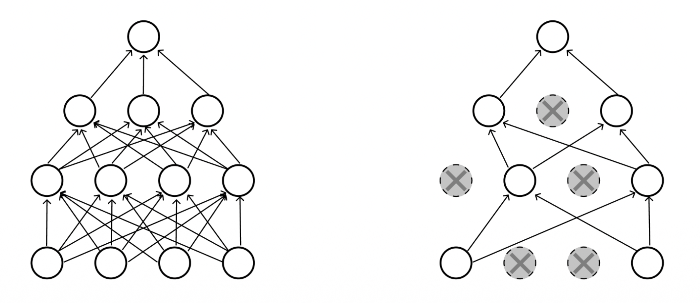
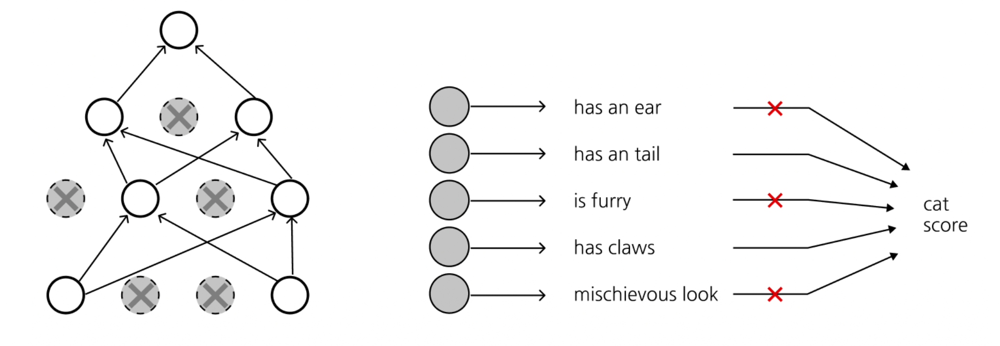

들어가며
지난 강의에서는 손실 함수(Loss Function)와 역전파(Backpropagation)를 다루었습니다. 이번 강의에서는 본격적으로 신경망(Neural Network) 의 구조로 들어갑니다.
선형 분류기에서 출발하여, 비선형성을 통해 표현력이 폭발적으로 증가하는 다층 신경망(MLP)을 살펴보고, 이미지에 특화된 합성곱 신경망(CNN) 의 구성 요소를 하나씩 분해해 보겠습니다. 이어서 깊은 신경망을 안정적으로 학습시키기 위한 세 가지 핵심 도구인 가중치 초기화(Weight Initialization), 정규화 계층(Normalization), 정규화 기법(Regularization) 을 차례로 정리합니다.
이 강의의 전체 목차는 다음과 같습니다.
- Neural networks
- Convolutional neural network
- Pooling layer
- Activation
- Weight initialization
- Normalization
- Regularization
1. 신경망 (Neural Networks)
1.1 선형 분류기에서 2층 신경망으로
기존의 선형 점수 함수(linear score function)는 다음과 같이 단순한 형태였습니다.
\[ f = Wx \]
이는 입력 \(x\)에 가중치 행렬 \(W\)를 한 번 곱하는 것으로, 클래스마다 하나의 템플릿(template) 만을 학습하는 것과 같습니다. 예를 들어 CIFAR-10에서 ‘말(horse)’ 클래스의 템플릿을 시각화하면 머리가 양쪽에 달린 듯한 형상이 나오는데, 이는 왼쪽을 보는 말과 오른쪽을 보는 말을 하나의 템플릿으로 평균 내려 했기 때문입니다. 즉, 선형 모델은 클래스 내부의 다양성(intra-class variation)을 포착하지 못합니다.
이를 해결하기 위해 2층 신경망(2-layer Neural Network) 을 도입합니다.
\[ f = W_2 \max(0, W_1 x) \]
여기서 핵심은 다음과 같습니다.
- \(W_1 x\) 는 입력을 중간 표현(intermediate templates) \(h\)로 변환합니다.
- \(\max(0, \cdot)\) 는 ReLU 비선형성으로, 음수를 0으로 만듭니다.
- \(W_2\) 는 이 중간 템플릿들의 선형 결합(linear combination) 을 통해 최종 점수를 만듭니다.
이렇게 하면 ’왼쪽 보는 말 템플릿’과 ’오른쪽 보는 말 템플릿’을 각각 따로 학습한 뒤, 둘 중 하나라도 활성화되면 ’말’로 분류할 수 있게 됩니다. 즉, 신경망은 중간 템플릿들의 선형 결합으로 이해할 수 있습니다.

1.2 다층 퍼셉트론 (Multi-layer Perceptron, MLP)
같은 원리를 반복하면 여러 층을 쌓아(go many layers deep) 더 깊은 네트워크를 만들 수 있습니다.
- (이전) 선형: \(f = Wx\)
- (2층) \(f = W_2 \max(0, W_1 x)\)
- (3층) \(f = W_3 \max(0, W_2 \max(0, W_1 x))\)
각 층은 (선형 변환 → 비선형성)의 조합이며, 이 패턴을 깊게 쌓은 것이 MLP입니다.
1.3 비선형성의 역할 (Non-linearities)
여기서 자연스러운 질문이 생깁니다. 비선형성이 없다면 MLP는 어떻게 될까요?
만약 \(\max(0, \cdot)\) 같은 비선형 활성화를 제거하면, 예를 들어 3층 네트워크는
\[ f = W_3 (W_2 (W_1 x)) = (W_3 W_2 W_1) x = W' x \]
가 되어 버립니다. 즉, 여러 선형 변환의 합성은 다시 하나의 선형 변환일 뿐이며, 아무리 층을 깊게 쌓아도 표현력은 단일 선형 모델과 동일합니다. 비선형성은 네트워크에 깊이의 의미를 부여하는 필수 요소인 것입니다.
대표적인 활성화 함수들은 다음과 같습니다.
- Sigmoid: \(\sigma(x) = \dfrac{1}{1+e^{-x}}\) — 출력 범위 \((0,1)\)
- tanh: \(\tanh(x)\) — 출력 범위 \((-1,1)\), 0 중심
- ReLU: \(\max(0, x)\) — 가장 널리 쓰이는 기본 선택지
- Leaky ReLU: \(\max(0.1x, x)\) — 음수 영역의 기울기 소실 완화
- Maxout: \(\max(w_1^\top x + b_1, \; w_2^\top x + b_2)\)
- ELU: \(x \ (x \geq 0)\), \(\alpha(e^x - 1)\ (x < 0)\)

1.4 보편 근사 정리 (Universal Approximation Theorem)
신경망의 표현력을 이론적으로 뒷받침하는 것이 보편 근사 정리입니다.
1.4.1 정리의 진술
Theorem (Cybenko, 1989). \(\Omega \subset \mathbb{R}^n\) 을 컴팩트 집합이라 하고, \(\sigma\) 를 원소별(element-wise) 시그모이드 함수라 하자. 그러면 임의의 \(\epsilon > 0\) 과 임의의 연속 함수 \(f : \mathbb{R}^n \to \mathbb{R}\) 에 대하여, 어떤 \(m \in \mathbb{N}\), \(W_1 \in \mathbb{R}^{m\times n}\), \(b_1 \in \mathbb{R}^m\), \(W_2 \in \mathbb{R}^{1\times m}\) 와 2층 신경망 함수 \[ g(x) = W_2\, \sigma(W_1 x + b_1) \] 가 존재하여 \(|f(x) - g(x)| < \epsilon, \ \forall x \in \Omega\) 를 만족한다.
즉, 은닉층 하나만 있어도(2층 신경망) 충분히 많은 뉴런 \(m\) 을 쓰면 임의의 연속 함수를 원하는 정밀도로 근사할 수 있다는 강력한 결과입니다. 자세한 증명은 Cybenko의 “Approximation by Superpositions of a Sigmoidal Function”을 참고하시기 바랍니다.
1.4.2 직관적 이해 ① — 가중치와 편향의 역할
1차원 시그모이드 \(\sigma(wx + b)\) 를 생각해 봅시다.
- 가중치 \(w\) 는 기울기(slope)를 조절합니다. \(w\) 가 커질수록 시그모이드는 점점 가파른 계단 함수에 가까워집니다 (\(w = 1\) vs \(w = 10\) 비교).
- 편향 \(b\) 는 함수를 좌우로 이동(shift)시킵니다. \(b\) 를 음수로 키우면 계단이 오른쪽으로 밀립니다 (\(b = 0\) vs \(b = -20\)).

1.4.3 직관적 이해 ② — 범프 함수(Bump Function) 만들기
위치가 다른 두 개의 가파른 시그모이드(예: \(b=0\) 과 \(b=-20\))를 빼면(subtract), 특정 구간에서만 1에 가까운 값을 갖는 범프 함수(bump function) 가 만들어집니다.
- 가중치를 조절하면 범프의 높이(scale) 를,
- 편향을 조절하면 범프의 위치(shift) 를 자유롭게 설정할 수 있습니다.

1.4.4 직관적 이해 ③ — 범프의 선형 결합으로 임의 함수 근사
이러한 범프 함수들의 집합은 연속 함수 공간의 기저(basis) 역할을 합니다. 폭이 충분히 좁은 범프들을 적절한 높이로 여러 개 더하면, 마치 리만 합(Riemann sum)처럼 임의의 연속 함수를 계단 모양으로 근사할 수 있습니다. 따라서 이 기저들로 표현 가능한 2층 신경망이 주어진 연속 함수를 근사할 수 있다는 결론에 도달합니다.

주의: 보편 근사 정리는 존재성(existence) 만을 보장합니다. 필요한 뉴런 수 \(m\) 이 비현실적으로 클 수 있고, 그러한 가중치를 경사하강법으로 찾을 수 있는지(learnability) 는 별개의 문제입니다. 실무에서 깊은 네트워크를 선호하는 이유이기도 합니다.
2. 합성곱 신경망 (Convolutional Neural Network)
2.1 완전 연결 계층 (Fully Connected Layer)의 한계
지금까지의 MLP는 입력 이미지를 하나의 긴 벡터로 펼쳐서 처리했습니다. 예를 들어 \(32 \times 32 \times 3\) 이미지를 \(3072 \times 1\) 벡터로 펼친(stretch) 뒤, \(10 \times 3072\) 가중치 행렬을 곱해 10차원 활성화를 얻습니다. 이때 출력의 각 숫자는 가중치 행렬의 한 행과 입력 전체의 내적(3072차원 내적)입니다.
이 방식의 문제는 두 가지입니다.
- 공간 구조 파괴: 펼치는 순간 이미지의 2차원 공간 정보(인접 픽셀 관계)가 사라집니다.
- 파라미터 폭증: 모든 입력과 모든 출력이 연결되어 가중치가 매우 많습니다.
CNN은 가중치 공유(weight sharing) 를 통해 파라미터를 획기적으로 줄이면서 공간 구조를 보존합니다.

2.2 합성곱 계층 (Convolution Layer)
합성곱 계층은 입력의 공간 구조를 보존(preserves the spatial structures) 합니다.
핵심 동작은 다음과 같습니다.
- \(32 \times 32 \times 3\) 이미지에 대해, 필터(filter) \(w\) 는 \(5 \times 5 \times 3\) 크기를 가집니다. 필터의 깊이(3)는 항상 입력의 깊이와 일치해야 합니다.
- 필터를 이미지 위에서 공간적으로 슬라이드(slide over spatially) 하면서 각 위치에서 점곱(dot product)을 계산합니다.
- 한 위치에서의 출력은 단 하나의 숫자입니다: \[ w^\top x + b \] 이는 필터와 이미지의 \(5 \times 5 \times 3 = 75\) 차원 패치 사이의 내적에 편향을 더한 값입니다.
필터를 모든 공간 위치에 대해 슬라이드하면, \(32 \times 32\) 입력으로부터 \(28 \times 28\) 크기의 활성화 맵(activation map) 이 하나 생성됩니다.

여러 개의 필터를 사용하면 각 필터마다 별도의 활성화 맵이 생깁니다. 예를 들어 6개의 \(5 \times 5\) 필터를 쓰면 6개의 활성화 맵이 만들어지고, 이를 깊이 방향으로 쌓아 \(28 \times 28 \times 6\) 의 “새 이미지”를 얻습니다. 즉, 출력 볼륨의 깊이는 필터의 개수와 같습니다.
CNN은 이 (CONV → ReLU) 블록을 반복적으로 쌓아 깊은 표현을 학습합니다. 예를 들어 \(32\times32\times3 \to 28\times28\times6 \to 24\times24\times10 \to \cdots\) 와 같이 진행됩니다.

2.3 합성곱 계층의 하이퍼파라미터
합성곱 계층의 출력 크기를 결정하는 세 가지 하이퍼파라미터가 있습니다.
- 필터 개수(number of filters): 출력 볼륨의 깊이를 결정합니다. (필터 개수 = 활성화 맵 개수)
- 스트라이드(stride): 필터를 한 번에 몇 픽셀씩 이동시킬지 결정합니다. stride=1이면 1픽셀씩, stride=2이면 2픽셀씩 건너뛰며, 클수록 공간적으로 더 작은 출력이 나옵니다.
- 제로 패딩(zero-padding): 입력 가장자리를 0으로 둘러쌉니다. 출력의 공간 크기를 제어할 수 있다는 장점이 있습니다.

출력 크기 공식
입력 공간 크기 \(W\), 필터 크기 \(F\), 패딩 \(P\), 스트라이드 \(S\) 가 주어졌을 때, 출력의 공간 크기는 다음과 같습니다.
\[ \text{output size} = \frac{W - F + 2P}{S} + 1 \]
2.4 예제 1: 출력 활성화 크기 (Output Activation Size)
문제: 입력 볼륨 \(32 \times 32 \times 3\), \(5\times5\) 필터 10개, stride 1, pad 2일 때 출력 볼륨의 크기는?
공식에 대입하면:
\[ \frac{32 + 2\cdot 2 - 5}{1} + 1 = \frac{31}{1} + 1 = 32 \]
따라서 공간 크기는 \(32 \times 32\) 이고, 필터가 10개이므로 출력 깊이는 10입니다. 즉, 출력 볼륨은 \(\boxed{32 \times 32 \times 10}\) 입니다.

2.5 예제 2: 파라미터 개수 (Number of Parameters)
문제: 같은 설정(입력 \(32\times32\times3\), \(5\times5\) 필터 10개, stride 1, pad 2)에서 이 계층의 파라미터 개수는?
한 필터당 파라미터는 다음과 같습니다.
\[ \underbrace{5 \times 5 \times 3}_{\text{가중치}} + \underbrace{1}_{\text{편향}} = 76 \]
필터가 10개이므로 전체 파라미터는:
\[ 76 \times 10 = \boxed{760} \]
여기서 핵심은 가중치 공유 입니다. 동일한 필터가 모든 공간 위치에서 재사용되므로, FC 계층이라면 수백만 개가 필요했을 파라미터가 760개로 줄어듭니다.

3. 풀링 계층 (Pooling Layer)
풀링 계층의 목적은 다음과 같습니다.
- 표현을 더 작고 다루기 쉽게(smaller and more manageable) 만듭니다 — 다운샘플링.
- 각 활성화 맵에 독립적으로(operates over each activation map independently) 적용됩니다. 즉, 깊이(채널) 방향으로는 섞지 않고 공간 차원만 줄입니다.
예를 들어 \(224 \times 224 \times 64\) 입력에 풀링을 적용하면 채널 수 64는 그대로 유지한 채 공간 크기만 \(112 \times 112 \times 64\) 로 절반이 됩니다.

3.1 Max Pooling / Average Pooling
가장 흔한 방식은 Max Pooling 입니다. 예를 들어 \(2\times2\) 필터, stride 2로 max pooling을 하면, 겹치지 않는 \(2\times2\) 영역마다 최댓값 하나만 남깁니다.
- Max pooling: 각 영역의 최댓값 선택 (가장 강하게 반응한 특징 보존)
- Average pooling: 각 영역의 평균값 사용

4. 활성화 함수 (Activation)
대표적인 두 활성화 함수와 그 미분을 다시 살펴봅니다.
- 로지스틱(Logistic / Sigmoid): \(g_\text{logistic} = \dfrac{1}{1 + e^{-z}}\)
- 하이퍼볼릭 탄젠트(tanh): \(g_\text{tanh} = \dfrac{e^z - e^{-z}}{e^z + e^{-z}}\)
두 함수 모두 입력이 크거나 작아지면 출력이 평평해지는 포화(saturation) 특성을 가집니다. 포화 영역에서는 미분값이 0에 가까워지는데, 이것이 바로 다음 절에서 다룰 기울기 소실(vanishing gradient) 의 근본 원인입니다.
오른쪽 미분 그래프를 보면, 선형 함수의 미분은 항상 1로 일정한 반면, sigmoid의 미분은 최대 0.25, tanh의 미분은 최대 1이며 양 끝에서 모두 0으로 수렴합니다.

5. 가중치 초기화 (Weight Initialization)
깊은 네트워크를 학습할 때, 가중치를 어떻게 초기화하느냐는 생각보다 훨씬 중요합니다. tanh 활성화를 쓰는 10층 MLP를 예로 들어 문제를 살펴보겠습니다.
5.1 작은 가중치로 초기화하면? (Small Weights)
W = 0.01 * np.random.randn(n_in, n_out)이렇게 표준편차가 매우 작은 가중치로 초기화하면, 활성화가 0으로 붕괴(collapse to zero) 합니다. 그 이유는 다음과 같습니다.
- 순전파(Forward): 거의 0에 가까운 행렬을 계속 곱하므로, 층을 거칠수록 활성화의 표준편차가 0으로 수렴합니다.
- 역전파(Backward): 마찬가지로 거의 0인 행렬을 계속 곱하므로, 상류 기울기(upstream gradient)도 0으로 붕괴합니다.
- 결과적으로 모든 활성화와 기울기가 0이 되어 가중치가 업데이트되지 않습니다.

5.2 큰 가중치로 초기화하면? (Big Weights)
그렇다면 큰 가중치로 초기화하면 될까요?
W = 1.0 * np.random.randn(n_in, n_out)이번에는 반대로 활성화가 \(-1\) 또는 \(+1\) 로 포화(saturate) 됩니다.
- 순전파: 큰 가중치를 곱하므로 입력이 커지고, tanh가 이를 \(\pm 1\) 로 포화시킵니다.
- 역전파: tanh는 \(\pm 1\) 근처에서 미분이 거의 0이므로, 기울기가 흐르지 않고 가중치가 업데이트되지 않습니다.
즉, 너무 작아도(0 붕괴), 너무 커도(포화) 문제가 발생합니다. 적절한 “황금 비율”을 찾아야 합니다.

5.3 Xavier 초기화
Xavier 초기화(Glorot & Bengio, 2010) 는 “각 층의 활성화 분산을 일정하게 유지한다”는 목표에서 출발합니다.
5.3.1 가정
- 가중치는 평균 0이며 i.i.d.로 추출됩니다.
- 편향 항은 없습니다.
- 입력 특징의 분산이 모두 동일합니다: \(\mathrm{Var}(z^0_j) = \mathrm{Var}(z^0)\).
- 활성화 \(f(\cdot)\) 는 0 근처에서 중심화되어 있고 선형이며 단위 기울기를 갖습니다 (tanh가 0 근처에서 그렇습니다).
5.3.2 순전파 분산 (Forward Variance)
\(i\) 번째 층의 출력 \(z^{i+1}_k\) 는 다음과 같습니다. 0 근처 선형 가정으로 \(f\) 를 항등 함수처럼 근사합니다.
\[ z^{i+1}_k = f(s^i_k) = f\left( \sum_{j=1}^{n_i} W^i_{kj} z^i_j \right) \approx \sum_{j=1}^{n_i} W^i_{kj} z^i_j \]
이제 분산을 계산합니다. 두 독립 확률변수 \(X \perp Y\) 에 대한 곱의 분산 공식을 활용합니다.
\[ \mathrm{Var}(XY) = \mathbb{E}[Y]^2 \mathrm{Var}(X) + \mathbb{E}[X]^2 \mathrm{Var}(Y) + \mathrm{Var}(X)\mathrm{Var}(Y) \]
가중치와 입력이 모두 평균 0이라는 가정(\(\mathbb{E}[W]=0,\ \mathbb{E}[z]=0\))에서 앞의 두 항이 사라지고, \(\mathrm{Var}(W_{kj}z_j) = \mathrm{Var}(W_{kj})\mathrm{Var}(z_j)\) 만 남습니다. \(n_i\) 개의 독립 항을 더하므로:
\[ \mathrm{Var}(z^{i+1}_k) \approx n_i\, \mathrm{Var}(W^i_{kj})\, \mathrm{Var}(z^i_j) \]
층 간 활성화 분산을 동일하게 (\(\mathrm{Var}(z^{i+1}) = \mathrm{Var}(z^i)\)) 만들려면:
\[ \boxed{\mathrm{Var}(W^i_{kj}) = \frac{1}{n_i}} \]
5.3.3 역전파 분산 (Backward Variance)
기울기 역시 층 간에 분산이 일정해야 합니다. 연쇄법칙으로 \(z^i_j\) 에 대한 손실 기울기를 전개합니다. 여기서 \(\partial z^{i+1}_k / \partial s^i_k \approx 1\) (0 근처 단위 기울기 가정)을 사용합니다.
\[ \frac{\partial \ell}{\partial z^i_j} = \sum_{k=1}^{n_{i+1}} \underbrace{\frac{\partial \ell}{\partial z^{i+1}_k}}_{\text{upstream}} \underbrace{\frac{\partial z^{i+1}_k}{\partial z^i_j}}_{\text{local}} \approx \sum_{k=1}^{n_{i+1}} \frac{\partial \ell}{\partial z^{i+1}_k} W^i_{kj} \]
순전파와 동일한 분산 논리를 적용하면:
\[ \mathrm{Var}\!\left(\frac{\partial \ell}{\partial z^i_k}\right) \approx n_{i+1}\, \mathrm{Var}\!\left(\frac{\partial \ell}{\partial z^{i+1}_j}\right) \mathrm{Var}(W^i_{jk}) \]
기울기 분산을 층 간에 보존하려면:
\[ \boxed{\mathrm{Var}(W^i_{jk}) = \frac{1}{n_{i+1}}} \]
5.3.4 두 조건의 절충 — 조화 평균
순전파는 \(1/n_i\), 역전파는 \(1/n_{i+1}\) 을 요구합니다. \(n_i \neq n_{i+1}\) 이면 둘을 동시에 만족할 수 없으므로, 합리적인 절충안으로 조화 평균(harmonic mean) 형태를 사용합니다.
\[ \mathrm{Var}(W^i) = \frac{2}{n_i + n_{i+1}} \]
- 일부 구현(Caffe)은 단순히 \(\mathrm{Var}(W^i) = \dfrac{1}{n_i}\) 를 씁니다.
- 정규분포 \(\mathcal{N}(0,1)\) 에서 샘플링한다면 \(\sqrt{\dfrac{2}{n_i + n_{i+1}}}\) 를 곱합니다.
- 균등분포 \(\mathrm{Uni}(-a, a)\) 에서 샘플링한다면 \(a = \sqrt{\dfrac{6}{n_i + n_{i+1}}}\) 로 둡니다. (균등분포 \(\mathrm{Uni}(-a,a)\) 의 분산이 \(a^2/3\) 이므로, 이를 목표 분산 \(2/(n_i+n_{i+1})\) 과 같게 놓으면 \(a = \sqrt{6/(n_i+n_{i+1})}\) 가 됩니다.)
실제로 \(W = \text{np.random.randn}(n_\text{in}, n_\text{out}) / \sqrt{n_\text{in}}\) 으로 초기화하면, 10층 tanh 네트워크에서도 활성화 분포가 층마다 잘 퍼진 종 모양을 유지합니다.

5.4 He 초기화
Xavier 초기화의 가정은 활성화가 0 근처에서 선형일 때 성립합니다. 그러나 \(f(\cdot)\) 가 ReLU 인 경우 이 가정이 깨집니다.
- ReLU는 대략 입력의 절반을 0으로 만들기(zeroes out half) 때문에, 분산이 절반으로 줄어듭니다.
- 이를 보정하기 위해 분산을 2배로 키웁니다: \[ \mathrm{Var}(W^i) = \frac{2}{n_i} \]
- 자세한 내용은 He et al. (2015)를 참고하시기 바랍니다.
깊은 네트워크를 어떻게 초기화하는 것이 최선인지는 여전히 활발한 연구 분야입니다. 기울기 소실/폭발(vanishing/exploding gradients)과의 싸움은 전형적인 골칫거리이며, 상당한 시행착오를 요구합니다.
6. 정규화 계층 (Normalization)
6.1 배치 정규화 (Batch Normalization)의 아이디어
배치 정규화(BatchNorm, Ioffe & Szegedy, 2015) 의 핵심 아이디어는 한 계층의 출력을 평균 0, 분산 1로 정규화하는 것입니다.
- 왜 효과적인가? 원래는 “내부 공변량 이동(internal covariate shift)” 으로 설명되었지만, 현대적 이해로는 최적화 지형(optimization landscape)을 더 매끄럽게(smoother) 만들기 때문으로 보고 있습니다.
- 정규화 연산은 다음과 같습니다: \[ \hat{x} = \frac{x - \mathbb{E}[x]}{\sqrt{\mathrm{Var}[x]}} \]
- 이 함수는 미분 가능(differentiable) 하므로, 네트워크 안의 연산자로 삽입하여 역전파를 통과시킬 수 있습니다.
6.2 배치 정규화의 수식
입력 \(x \in \mathbb{R}^{N \times D}\) (\(N\): 배치 크기, \(D\): 데이터 차원)에 대해 다음을 계산합니다.
- 채널별 평균 (\(\mu \in \mathbb{R}^D\)): \[ \mu_j = \frac{1}{N} \sum_{i=1}^{N} x_{i,j} \]
- 채널별 분산 (\(\sigma^2 \in \mathbb{R}^D\)): \[ \sigma_j^2 = \frac{1}{N} \sum_{i=1}^{N} (x_{i,j} - \mu_j)^2 \]
- 정규화 (\(\hat{x} \in \mathbb{R}^{N\times D}\)): \[ \hat{x}_{i,j} = \frac{x_{i,j} - \mu_j}{\sqrt{\sigma_j^2 + \epsilon}} \] (\(\epsilon\) 은 0으로 나누는 것을 방지하는 작은 상수)

6.2.1 문제 ① — 너무 제약적이다
평균 0, 분산 1로 강제하는 것은 지나치게 제약적(too restrictive) 일 수 있습니다. 예를 들어 sigmoid 직전에 항상 분산 1로 만들면 비선형성을 제대로 활용하지 못할 수 있습니다.
이를 해결하기 위해 학습 가능한 스케일 \(\gamma\) 와 시프트 \(\beta\) (\(\gamma, \beta \in \mathbb{R}^D\))를 도입합니다.
\[ y_{i,j} = \gamma_j \hat{x}_{i,j} + \beta_j \]
- 만약 \(\gamma_j = \sigma_j\), \(\beta_j = \mu_j\) 로 학습되면 정규화를 되돌려 항등 함수(identity)를 기댓값 차원에서 복원할 수 있습니다.
- 즉, 네트워크가 필요하다면 정규화를 “끌” 수 있는 유연성을 부여합니다.
6.2.2 문제 ② — 테스트 시점
\(\mu, \sigma\) 의 추정치가 미니배치에 의존하므로, 배치 개념이 없는 테스트 시점에는 그대로 적용할 수 없습니다.
6.3 배치 정규화: 테스트 시점
해결책은 다음과 같습니다.
- 학습 중에 평균(\(\tilde\mu\))과 표준편차(\(\tilde\sigma\))의 이동 평균(running average) 을 계산해 둡니다.
- 테스트 시점에는 이 고정된 통계량을 사용합니다: \[ \hat{x}_{i,j} = \frac{x_{i,j} - \tilde\mu_j}{\sqrt{\tilde\sigma_j^2 + \epsilon}}, \qquad y_{i,j} = \gamma_j \hat{x}_{i,j} + \beta_j \]
이렇게 하면 테스트 시점에는 입력 하나하나에 대해 결정론적으로 동작합니다.
6.4 합성곱 신경망에서의 배치 정규화 (Spatial BatchNorm)
| 구분 | FC 네트워크 | Conv 네트워크 (Spatial BN / BatchNorm2D) |
|---|---|---|
| 입력 형태 | \(x: N \times D\) | \(x: N \times C \times H \times W\) |
| 정규화 통계 | \(\mu, \sigma, \gamma, \beta : 1 \times D\) | \(\mu, \sigma, \gamma, \beta : 1 \times C \times 1 \times 1\) |
| 출력 | \(y = \dfrac{x-\mu}{\sigma}\gamma + \beta\) | \(y = \dfrac{x-\mu}{\sigma}\gamma + \beta\) |
CNN에서는 채널(C)마다 하나의 통계량을 갖되, 배치(\(N\))와 공간 차원(\(H, W\)) 전체에 걸쳐 평균/분산을 계산합니다.
6.5 배치 정규화: 위치
배치 정규화 계층은 보통 완전 연결(FC) 또는 합성곱(Conv) 계층 직후, 비선형성 직전에 삽입합니다.
\[ \cdots \to \text{FC} \to \text{BN} \to \tanh \to \text{FC} \to \text{BN} \to \tanh \to \cdots \]

6.6 배치 정규화의 장단점
장점(Pros)
- 깊은 네트워크의 학습을 훨씬 쉽게 만듭니다.
- 더 높은 학습률(higher learning rate)을 허용하고, 수렴이 빨라집니다.
- 초기화에 더 강건(robust to initialization)해집니다.
- 학습 중 정규화(regularization) 효과도 부수적으로 가집니다.
- 테스트 시점에 추가 오버헤드가 없으며, Conv나 FC 계층에 융합(fuse)할 수 있습니다.
단점(Cons)
- 아직 이론적으로 완전히 이해되지 않았습니다.
- 학습과 테스트 시 동작이 다릅니다. 이는 매우 흔한 버그의 원인입니다.
6.7 다양한 정규화 계층
데이터 형태 \(N \times C \times H \times W\) 에 대해, 어떤 축을 따라 통계량을 계산하느냐에 따라 정규화 종류가 나뉩니다.
- 배치 정규화 (Batch Norm): 배치(\(N\)), 높이(\(H\)), 너비(\(W\))에 대해 정규화. 통계량 \(\mu, \sigma \in \mathbb{R}^C\).

- 레이어 정규화 (Layer Norm, Ba et al. 2016): 채널(\(C\)), 높이(\(H\)), 너비(\(W\))에 대해 정규화. 통계량 \(\mu, \sigma \in \mathbb{R}^N\).
- Transformer는 보통 BatchNorm 대신 LayerNorm 을 사용합니다. (단, CNN에서는 BatchNorm이 더 좋은 결과를 냅니다.)
- 학습 시 배치 크기와 독립적입니다.
- RNN, Transformer 같은 시퀀스 모델에 적합합니다.
- 각 샘플을 독립적으로 정규화합니다.

- 인스턴스 정규화 (Instance Norm, Ulyanov et al. 2017): 높이(\(H\))와 너비(\(W\))에 대해서만 정규화. 통계량 \(\mu, \sigma \in \mathbb{R}^{N\times C}\).
- 배치 크기와 독립적입니다.
- BatchNorm보다 더 세밀한(finer) 정규화입니다.
- 스타일 변환(style transfer) 이나 생성 모델에서 널리 쓰입니다.

- 그룹 정규화 (Group Norm, Wu & He 2018): 채널을 여러 그룹으로 묶어 정규화. 인스턴스 정규화를 일반화한 것입니다.

6.8 요약: 합성곱 신경망의 구성 요소
지금까지 본 CNN의 핵심 빌딩 블록은 다음과 같습니다.
- 합성곱 계층(Convolution Layers): 공간 구조를 보존하며 특징 추출.
- 풀링 계층(Pooling Layers): 공간 다운샘플링.
- 완전 연결 계층(Fully-Connected Layers): 최종 분류.
- 활성화 함수(Activation Function): 비선형성 (예: ReLU).
- 정규화(Normalization): \(\hat{x}_{i,j} = \dfrac{x_{i,j} - \mu_j}{\sqrt{\sigma_j^2 + \varepsilon}}\).

7. 정규화 기법 (Regularization)
7.1 과적합 (Overfitting)
심층 신경망 학습의 주요 이슈 중 하나는 과적합(overfitting) 입니다. 학습 데이터에는 잘 맞지만 새로운 데이터에는 일반화하지 못하는 현상으로, 학습 정확도와 검증 정확도 사이의 일반화 격차(generalization gap) 로 나타납니다. 이를 줄이기 위해 다양한 정규화 기법 이 제안되었습니다.

7.2 손실에 항 추가하기 — 가중치 감쇠 (Weight Decay)
가장 전통적인 정규화 기법은 손실 함수에 가중치 크기에 대한 페널티 항 \(\lambda R(W)\) 를 더하는 것입니다.
\[ L = \frac{1}{N} \sum_{i=1}^{N} \sum_{j \neq y_i} \max\bigl(0,\, f(x_i; W)_j - f(x_i; W)_{y_i} + 1\bigr) + \lambda R(W) \]
흔히 쓰이는 정규화 항은 다음과 같습니다.
- L2 정규화 (Weight Decay): \(R(W) = \sum_k \sum_l W_{k,l}^2\) — 가중치를 전반적으로 작게 유지
- L1 정규화: \(R(W) = \sum_k \sum_l |W_{k,l}|\) — 희소성(sparsity) 유도
- Elastic Net (L1 + L2): \(R(W) = \sum_k \sum_l \beta W_{k,l}^2 + |W_{k,l}|\)
여기서 \(\lambda\) 는 페널티의 강도를 조절하는 하이퍼파라미터입니다.
7.3 드롭아웃 (Dropout)
드롭아웃(Srivastava et al., 2014) 은 매 순전파마다 일부 뉴런(활성화)을 무작위로 0으로 설정 하는 기법입니다.
- 뉴런을 버릴(drop) 확률이 하이퍼파라미터이며, 0.5가 흔히 사용됩니다.
- 매 forward pass마다 서로 다른 뉴런이 무작위로 꺼집니다.

7.3.1 드롭아웃 예제 코드
p = 0.5 # 유닛을 활성 상태로 유지할 확률. 높을수록 드롭아웃이 약함
def train_step(X):
""" X contains the data """
# 3층 신경망의 순전파
H1 = np.maximum(0, np.dot(W1, X) + b1)
U1 = np.random.rand(*H1.shape) < p # 첫 번째 드롭아웃 마스크
H1 *= U1 # drop!
H2 = np.maximum(0, np.dot(W2, H1) + b2)
U2 = np.random.rand(*H2.shape) < p # 두 번째 드롭아웃 마스크
H2 *= U2 # drop!
out = np.dot(W3, H2) + b3
# 역전파 및 파라미터 업데이트 (생략)7.3.2 해석 ① — 특징 간 공적응(co-adaptation) 방지
드롭아웃은 네트워크가 특정 소수의 특징에만 과도하게 의존하지 못하게 합니다. 예를 들어 “고양이” 점수를 계산할 때 ‘귀’, ‘꼬리’, ‘털’, ‘발톱’, ‘장난스러운 표정’ 등 여러 단서가 있는데, 드롭아웃은 이 중 일부를 무작위로 차단합니다. 따라서 네트워크는 남은 단서만으로도 판단할 수 있도록 중복적이고 견고한 표현을 학습하게 됩니다.

7.3.3 해석 ② — 모델 앙상블
드롭아웃은 파라미터를 공유하는 거대한 모델 앙상블(ensemble)을 학습하는 것으로 해석할 수 있습니다. 각 forward pass마다 서로 다른 부분망(sub-network)이 샘플링되므로, \(n\) 개의 뉴런이 있으면 \(2^n\) 개의 가능한 부분망을 동시에 학습하는 셈입니다.

7.3.4 드롭아웃: 테스트 시점
테스트 시점에는 무작위성을 평균 내야 합니다. 모델을 \(f\), 무작위 마스크를 \(z\) 라 하면 출력은 \(y = f(x, z)\) 이고, 이상적으로는 다음 적분을 계산해야 합니다.
\[ y = \mathbb{E}_z[f(x, z)] = \int p(z) f(x, z)\, dz \]
그러나 이 적분을 해석적으로 푸는 것은 어렵습니다. 그래서 근사 합니다.
단일 뉴런 예제로 직관 잡기: 입력 \(x, y\) 와 가중치 \(w_1, w_2\) 를 받는 뉴런 \(a\) 를 생각합니다.
- 테스트 시점(드롭아웃 없음)의 출력 기댓값: \[ \mathbb{E}[a] = w_1 x + w_2 y \]
- 드롭아웃 확률 0.5로 학습 중 의 출력 기댓값 (네 가지 마스크 경우를 평균): \[ \begin{aligned} \mathbb{E}[a] &= \tfrac{1}{4}(w_1 x + w_2 y) + \tfrac{1}{4}(w_1 x + 0\cdot y) \\ &\quad + \tfrac{1}{4}(0 \cdot x + w_2 y) + \tfrac{1}{4}(0 \cdot x + 0 \cdot y) \\ &= \tfrac{1}{2}(w_1 x + w_2 y) \end{aligned} \]
즉, 학습 시 기댓값이 테스트 시 기댓값의 절반(드롭아웃 확률 \(p\) 배) 이 됩니다.

이 불일치를 맞추기 위해, 테스트 시점에는 아무것도 버리지 않되 각 뉴런의 출력에 드롭아웃 확률 \(p\) 를 곱합니다.
- 드롭아웃 적용 시 뉴런의 기대 출력은 \(p \cdot x + (1-p)\cdot 0 = px\) 입니다.
- 테스트 시 뉴런을 항상 활성화하면 출력이 \(x\) 가 되므로, \(x \to px\) 로 조정하여 기대 출력을 일치시킵니다.
- 이 감쇠(attenuation)는 모든 가능한 이진 마스크(지수적으로 많은 부분망)에 대한 앙상블 예측을 계산하는 과정과 관련됨이 보여질 수 있습니다.
7.3.5 드롭아웃 요약 (Vanilla)
""" Vanilla Dropout: 권장되지 않는 구현 """
p = 0.5
def train_step(X):
H1 = np.maximum(0, np.dot(W1, X) + b1)
U1 = np.random.rand(*H1.shape) < p
H1 *= U1 # drop in forward pass
H2 = np.maximum(0, np.dot(W2, H1) + b2)
U2 = np.random.rand(*H2.shape) < p
H2 *= U2 # drop in forward pass
out = np.dot(W3, H2) + b3
def predict(X):
# 앙상블된 순전파
H1 = np.maximum(0, np.dot(W1, X) + b1) * p # scale at test time
H2 = np.maximum(0, np.dot(W2, H1) + b2) * p # scale at test time
out = np.dot(W3, H2) + b3- 학습: 순전파에서 마스크를 곱해 뉴런을 버립니다.
- 테스트: 활성화에 \(p\) 를 곱해 스케일을 맞춥니다.
7.3.6 더 흔한 방식: 역 드롭아웃 (Inverted Dropout)
테스트 시점에 스케일링을 하는 대신, 학습 시점에 미리 \(1/p\) 로 나누어 스케일을 보정하는 방식이 더 선호됩니다.
p = 0.5
def train_step(X):
H1 = np.maximum(0, np.dot(W1, X) + b1)
U1 = (np.random.rand(*H1.shape) < p) / p # 학습 중 drop & scale. /p 주목
H1 *= U1
H2 = np.maximum(0, np.dot(W2, H1) + b2)
U2 = (np.random.rand(*H2.shape) < p) / p # /p 주목
H2 *= U2
out = np.dot(W3, H2) + b3
def predict(X):
# 스케일링 불필요 — 테스트 시점이 변하지 않음!
H1 = np.maximum(0, np.dot(W1, X) + b1)
H2 = np.maximum(0, np.dot(W2, H1) + b2)
out = np.dot(W3, H2) + b3- 역 버전이 선호되는 이유: 테스트 시점의 네트워크가 변하지 않아(test time is unchanged) 추론이 훨씬 간단해지기 때문입니다.

7.3.7 드롭아웃을 어디에 적용하는가
- AlexNet과 VGG는 대부분의 파라미터가 완전 연결(FC) 계층 에 몰려 있습니다 (특히 fc6). 따라서 드롭아웃은 주로 이 FC 계층에 적용됩니다.
- 그러나 현대 아키텍처(ResNet, ViT) 는 드롭아웃을 거의 또는 전혀 사용하지 않는 경향이 있습니다. (이들은 BatchNorm/LayerNorm 등 다른 정규화에 더 의존합니다.)

7.4 정규화의 공통 패턴
정규화 기법들에는 다음과 같은 공통 패턴 이 있습니다.
- 학습(Training): 어떤 형태의 무작위성(randomness)을 추가한다.
- 테스트(Test): 그 무작위성을 평균 내어 제거한다 (때로는 근사적으로).
이 패턴을 따르는 두 대표적 기법은 다음과 같습니다.
- Dropout: 학습 시 뉴런을 무작위로 끄고, 테스트 시 기댓값을 근사(스케일링)합니다.
- BatchNorm: 학습 시 무작위 미니배치 통계로 정규화하고, 테스트 시 고정된(이동 평균) 통계로 정규화합니다.
마치며
이번 강의에서는 신경망의 표현력을 보장하는 보편 근사 정리에서 출발하여, 공간 구조를 보존하는 CNN의 구성 요소들, 그리고 깊은 네트워크를 안정적으로 학습시키기 위한 세 가지 축(초기화 · 정규화 계층 · 정규화 기법)을 살펴보았습니다.
특히 가중치 초기화(Xavier/He)와 정규화(BatchNorm)는 모두 “신호와 기울기의 분산을 층 사이에서 일정하게 유지한다” 는 동일한 철학을 공유하며, Dropout과 BatchNorm은 “학습 시 무작위성 추가 → 테스트 시 평균화” 라는 공통 패턴으로 묶인다는 점이 핵심 통찰이었습니다.